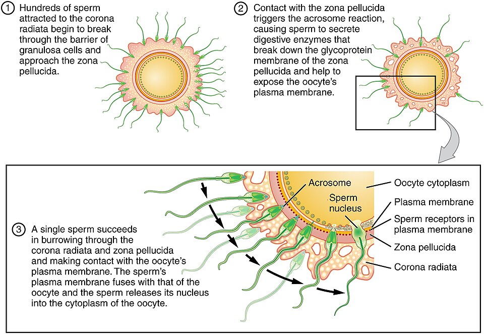

← Chapter 28
Anatomy & Physiology · Chapter 28
Fertilization
Of millions of sperm, only
one
fuses with the egg — and the egg has clever ways to make sure it's exactly one. Step through the meeting.
The journey
Fertilization
sperm + egg → zygote
The steps
‹ Prev
▶ Play
Next ›
📷 Reference image
A real labeled figure to compare with the interactive above.

Fertilization — OpenStax, CC BY 3.0 (via Wikimedia Commons)